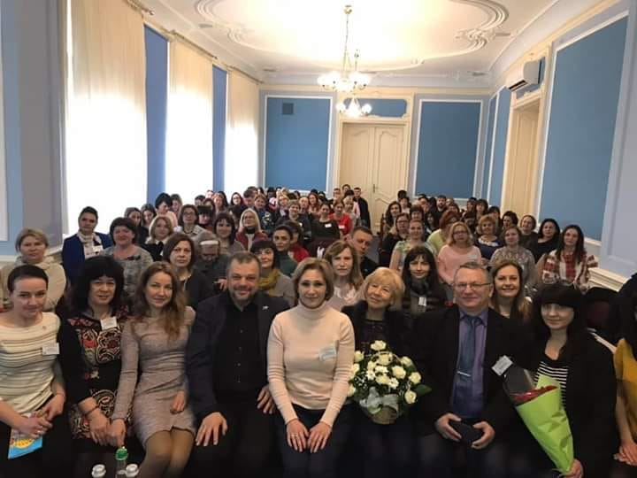
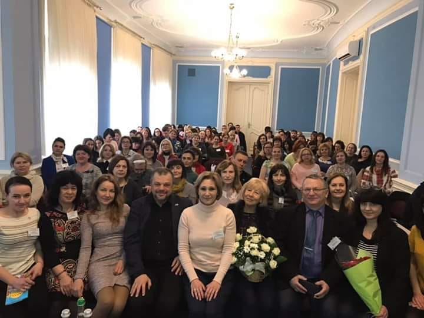
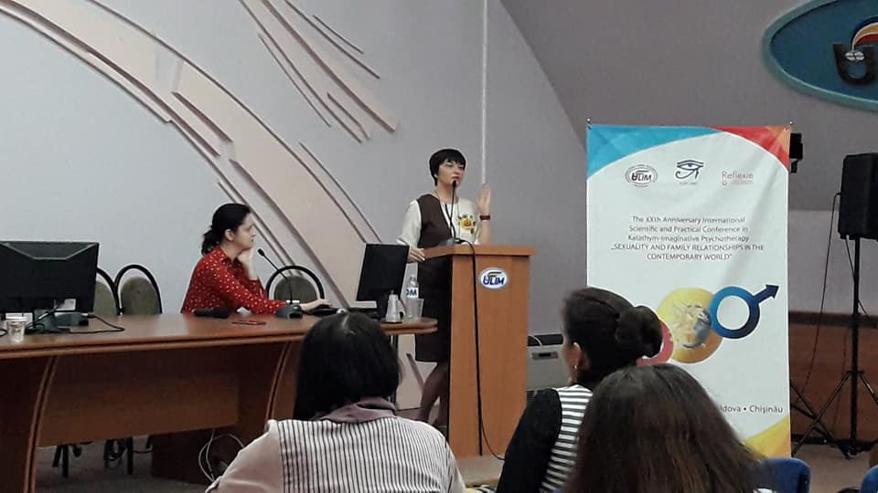
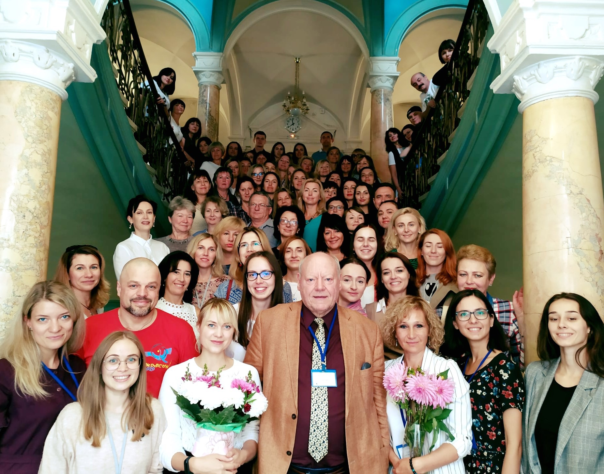
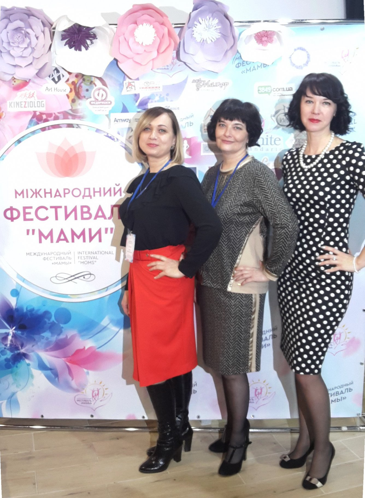

ХVIII Міжнародна науково-практична конференція «Методологія: теорія і практика символдрами» м. Київ 2017 р.


Конференція «Порушення харчової поведінки та психотерапія за методом символдрами» в Одесі, 2018 р.
Семінар Е.Вільке «Символдрама у лікуванні порушень харчової поведінки» 2018 р.


Семінар Біати Штайнер «Какатимно-імагінативна психотерапія психічної травми» у Львові 2019 р.
 

Семінар Я.Обухова «Особливості психотерапії аб’юзних стосунків і сімейного насилля» м.Хмельницький, 2019 р.

ХХ Міжнародний науково-прак4тичний1 семінар «Сексуакльність та сімейні взаємини у сучасному світі» Кишинів (Молдова,2019 р.)


Семінар Ульріха Заксе «Символдрама в роботі з межовим рівнем організації особистості», м. Львів 2019 р.



Міжнародний фестиваль «МАМИ» у м. Кам’янці-Подільському 2019 р.



Симінар РХП


фестиваль «Психологічний калейдоскоп» 2019 р. Кам’янець-Подільський


Захист дипломів на статус психотерапевта за методом символдрами у вересні 2021 р.. Приймає екзамен доцент ІРСГП М. Матвєєва


перша зустріч робочої групи